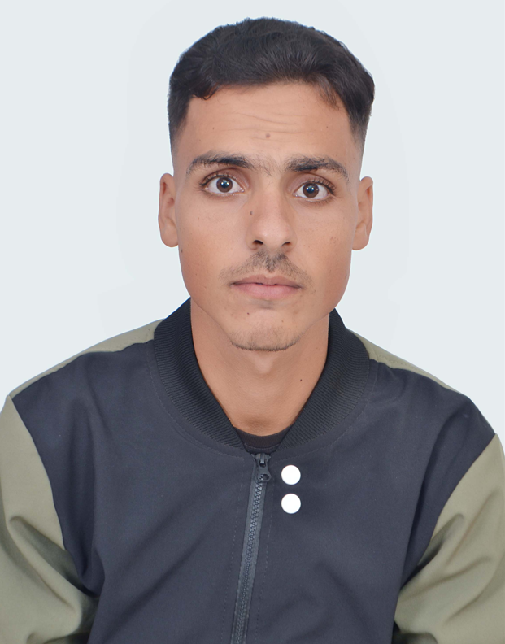

Langues
ArabeLangue maternelle
FrancaisBon niveau
AnglaisIntermediaire

Stage d'application - Ete 2026
Etudiant Ingenieur en Developpement Logiciel et Applicatif. Je construis des systemes elegants, des interfaces percutantes et des applications pensees pour etre fiables, utiles et agreables a utiliser.
Passionne par la conception de solutions logicielles innovantes, je combine une solide base theorique acquise en classes preparatoires avec une pratique intensive des technologies modernes de developpement. Mon objectif est de transformer des problemes complexes en architectures claires et en interfaces performantes.
Conception et developpement d'un site vitrine elegant pour un restaurant-cafe a Agadir. Focus sur l'ambiance visuelle, le menu et l'experience de reservation.
Participation au departement marketing pour un chatbot base sur la meteo. Analyse des besoins du marche et creation de supports promotionnels.
Design d'une solution d'extraction de donnees via OCR. Etude comparative des architectures cloud vs locales avec contraintes de securite.
Mini-application robuste de gestion administrative developpee en Java avec des principes orientes objets stricts.
Formation d'excellence en ingenierie logicielle, architecture des systemes et developpement applicatif.
Mathematiques, physique et sciences de l'ingenieur fondamentales.
Service client, organisation des produits et travail en equipe. Developpement de solides competences en communication et gestion du temps dans un environnement dynamique.
A la recherche d'un stage en ingenierie logicielle pour l'ete 2026. Ma boite mail est toujours ouverte.